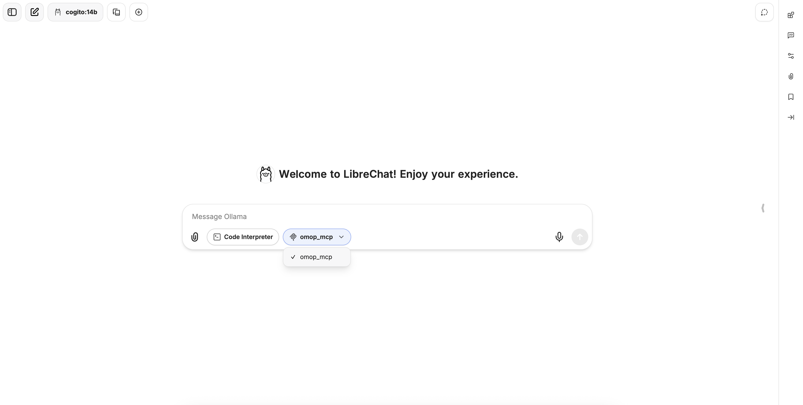

Installation Guide 🚀
⚠️ Pre-Alpha Stage Warning
OMCP is currently in pre-alpha development stage. This means:
- Features may change significantly between versions
- Breaking changes can occur without notice
- Documentation may be incomplete or outdated
- Bugs and unexpected behaviors are likely
We appreciate your patience and feedback as we work toward a stable release!
Installing from GitHub 📦
Prerequisites
- Git
- Git LFS
-
- On MacOS/Linux
curl -LsSf https://astral.sh/uv/install.sh | sh - On Windows
powershell -ExecutionPolicy ByPass -c "irm https://astral.sh/uv/install.ps1 | iex"
- On MacOS/Linux
-
Python 3.13 or higher (Let UV install and manage python versions within a virtual environment)
Step 1: Clone the Repository
git clone https://github.com/fastomop/omcp.git
cd omcp
Step 2: Install the package with dependencies
UV automatically creates the virtual environment with the correct python version and dependencies.
With DuckDB Support (Default)
uv sync --extra duckdb
With PostgreSQL Support
uv sync --extra postgres
With Databricks Support
uv sync --extra databricks
Step 3: Activate the virtual environment
source .venv/bin/activate # On Windows use: .venv\Scripts\activate
Using the Synthetic Database (DuckDB) 🗄️
OMCP comes with a synthetic OMOP database (located at /synthetic_data/synthea.duckdb) for testing and development purposes. This database follows the OMOP Common Data Model and contains fictional patient data available at Synthea.
Retrieving Synthea.duckdb
Since the database is a rather large file, the actual database has been replaced by a Git LFS pointer, you should see something like this inside synthea.duckdb:
version https://git-lfs.github.com/spec/v1
oid sha256:d753b619a8650c966ce219daa35b4126fb9307b790e49f0244646cb3b796feab
size 21508096
to retrieve the database:
git lfs install
git lfs pull
Setting Up the Environment Variable
Create a .env file in your project root with the connection string:
echo 'DB_CONNECTION_STRING="duckdb:///full/path/to/omcp/synthetic_data/synthea.duckdb"' > .env
Or set it directly in your environment:
# Linux/Mac
export DB_CONNECTION_STRING="duckdb:///full/path/to/omcp/synthetic_data/synthea.duckdb"
# Windows (Command Prompt)
set DB_CONNECTION_STRING=duckdb:///full/path/to/omcp/synthetic_data/synthea.duckdb
# Windows (PowerShell)
$env:DB_CONNECTION_STRING="duckdb:///full/path/to/omcp/synthetic_data/synthea.duckdb"
Using the Database for Experiments
The synthetic database contains a complete OMOP CDM schema with fictional patient data. You can:
- Explore tables like
person,condition_occurrence,drug_exposure, etc. - Run queries against it to test your applications
- Use it as a sandbox for learning the OMOP data model
It is easy to do this using the DuckDB UI by running the following command from the /synthetic_data directory.
duckdb -ui synthea.duckdb
Warning
DuckDB does not allow multiple processes to open a connection to the database at the same time when at least one of them has write access. To avoid running into problems, close any open connections to the database before running the MCP server.
Integrating with Claude Desktop 🤖
OMCP provides a Model Context Protocol server that can integrate with Claude Desktop.
Step 1: Install Claude Desktop
Download and install Claude Desktop from the official website. On Linux, use https://github.com/aaddrick/claude-desktop-debian/ or similar until an official release becomes available.
Step 2: Configure Claude Desktop to Use OMCP
- Open or create the Claude Desktop configuration file:
# Linux
mkdir -p ~/.config/Claude
nano ~/.config/Claude/claude_desktop_config.json
# macOS
mkdir -p ~/Library/Application\ Support/Claude
nano ~/Library/Application\ Support/Claude/claude_desktop_config.json
# Windows
notepad %APPDATA%\Claude\claude_desktop_config.json
- Add the following configuration:
// macOS
{
"mcpServers": {
"omop_mcp": {
"command": "uv",
"args": [
"--directory",
"/ABSOLUTE/PATH/TO/PARENT/FOLDER THAT CONTAINS main.py",
"run",
"main.py"
]
}
}
}
// Windows
{
"mcpServers": {
"omop_mcp": {
"command": "ABSOLUTE\\PAT\\TO\\UV\\uv.exe",
"args": [
"--directory",
"/ABSOLUTE/PATH/TO/OMCP/FOLDER",
"run",
"python",
"-m",
"omcp.main"
]
}
}
}
On mac replace /ABSOLUTE/PATH/TO/PARENT/FOLDER THAT CONTAINS main.py with the actual path to your OMCP installation.
On Windows replace /ABSOLUTE/PATH/TO/OMCP/FOLDER with the actual path to your OMCP directory.
Step 3: Launch Claude Desktop
Start Claude Desktop and the OMCP server should automatically be available for use. You can verify the connection by asking Claude to query the OMOP database.
Integrating with Localhost models 🦙
Step 1: Install Ollama
Download and install Ollama from the official website. To check if Ollama has been installed properly, open a terminal and type:
ollama --version
you should see something like this in your terminal: ollama version is 0.6.8
Step 2: Pull a model from Ollama
Go to the Ollama models and copy the name of the model you want to pull (e.g., cogito:14b), make sure the model you are pulling is compatible with the MCP tooling option. Next, type in the terminal:
ollama pull cogito:14b
The process will take a while depending on the size of the model, but when it finishes type in the terminal:
ollama list
if everything went well, you should see the model you have pulled from Ollama. In my case cogito:14b.
Step 3: End-user interface configuration
We are going to use Librechat as the end-user interface.
-
In the OMCP project, navigate to the directory where the
main.pyfile is located, go to the functiondef main()and change thetransportfromstdiotosse.def main(): """Main function to run the MCP server.""" mcp_app.run( transport="sse", #before was stdio ) -
In the same directory where
main.pyis located, run the following command:python main.pyYou should see something like this in the terminal:
This means that we are exposing our MCP Tool in the portINFO: Started server process [96250] INFO: Waiting for application startup. INFO: Application startup complete. INFO: Uvicorn running on http://0.0.0.0:8000 (Press CTRL+C to quit)http://0.0.0.0:8000so other services can consume it. -
Download and install Docker Desktop. Once Docker is installed, open Docker Desktop to ensure it is running.
-
In a separate terminal or IDE window, clone the Librechat repository:
git clone https://github.com/danny-avila/LibreChat.git -
In the Librechat repository, navigate to the project directory and create a configuration
.envfile, you can create the file by:cp .env.example .env -
In the same project directory, create a
.yamlfile, by:cp libreachat.example.yaml librechat.yaml -
Add the following code at the end of the
librechat.yamlfile we created above:# MCP servers mcpServers: omop_mcp: # type: sse # type can optionally be omitted url: http://host.docker.internal:8000/sse timeout: 60000 # 1 minute timeout for this server, this is the default timeout for MCP servers.Additionally, under your
customprovider section (endpoints), add an Ollama endpoint configuration. Adjustmodels.defaultto match the models you actually pulled with Ollama:custom: endpoints: - name: "Ollama" apiKey: "ollama" baseURL: "http://host.docker.internal:11434/v1/" models: default: ["cogito:14b","llama3.2:3b", "qwen2.5-coder:3b"] fetch: false titleConvo: true titleModel: "current_model" summarize: false summaryModel: "current_model" forcePrompt: false modelDisplayLabel: "Ollama" addParams: stop: - "<|start_header_id|>" - "<|end_header_id|>" - "<|eot_id|>" - "<|reserved_special_token>"Note: Replace the model names in
models.defaultwith the ones you have downloaded locally via Ollama. -
In the project directory, run:
If successful, you should see something like this:docker compose up -d[+] Running 5/5 ✔ Container vectordb Started ✔ Container chat-meilisearch Started ✔ Container chat-mongodb Started ✔ Container rag_api Started ✔ Container LibreChat Started -
Finally, go to the browser and type
localhost:3080, if it is the first time using Librechat, you need to create an account. Then select the model you pulled, in my casecogito:14band in the chat, just next to theCode Interpreteryou should see the MCP Tool, click on it and selectomop_mcp.You should see something like this: 
Troubleshooting 🔧
Common Issues
DuckDB Connection Problems
If you encounter errors connecting to the DuckDB database:
- Verify the file path in your connection string is correct
- Ensure the database file exists at the specified location
- Check permissions on the database file
Python Version Issues
OMCP requires Python 3.13+. To check your Python version:
python --version
Claude Desktop Integration Issues
If Claude Desktop doesn't recognize the OMCP server:
- Verify the configuration file is in the correct location
- Ensure the path to main.py is correct
- Restart Claude Desktop
Getting Help 💬
If you encounter issues not covered here:
- Open an issue on our GitHub repository
- Join our community discussions
- Check the FAQ section in our documentation
Next Steps 👣
Now that you have OMCP installed and configured:
- Explore the Contributing Guidelines if you'd like to help improve OMCP